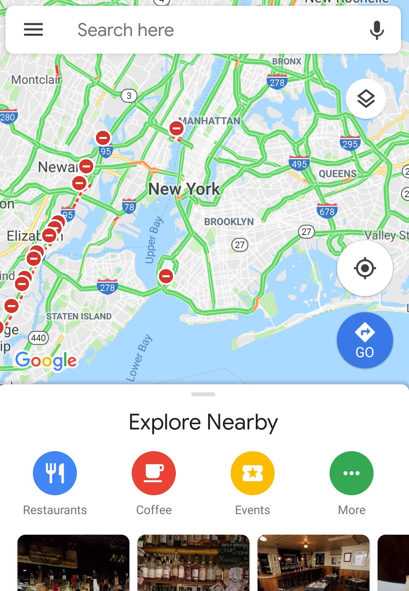

2020-03-01
Google Mapで下から引っ張ると出てくるやつ。

調べたら以外と簡単にできた。
dependenciesを追加。
dependencies {
implementation 'com.google.android.material:material:1.0.0'
}例
<androidx.coordinatorlayout.widget.CoordinatorLayout ..... >
<LinearLayout
android:id="@+id/bottomSheetLayout"
android:layout_width="match_parent"
android:layout_height="match_parent"
app:behavior_hideable="false"
app:behavior_peekHeight="56dp"
app:layout_behavior="@string/bottom_sheet_behavior">
中身
</LinearLayout>
</androidx.coordinatorlayout.widget.CoordinatorLayout>bottm sheetにしたいコンテンツ、今回の例ではLinearLayout、のlayout_behaviorを以下のように指定。
app:layout_behavior="@string/bottom_sheet_behavior
CoordinatorLayoutの一番下に配置する。
開いたり閉じたりをコードで制御する場合は、activity/fragmentの中で以下のように設定する。
bottomSheetBehavior = BottomSheetBehavior.from(bottomSheetLayout)
// 隠す
bottomSheetBehavior.state = BottomSheetBehavior.STATE_COLLAPSED
// 開く
bottomSheetBehavior.state = BottomSheetBehavior.STATE_EXPANDEDコールバックも設定できる。
bottomSheetBehavior.setBottomSheetCallback(object: BottomSheetBehavior.BottomSheetCallback(){
override fun onSlide(p0: View, p1: Float) {
TODO("not implemented") //To change body of created functions use File | Settings | File Templates.
}
override fun onStateChanged(p0: View, p1: Int) {
TODO("not implemented") //To change body of created functions use File | Settings | File Templates.
}
})参考
https://blog.mindorks.com/android-bottomsheet-in-kotlin
https://qiita.com/fumiyakawauso/items/1d0fa27aa508a3e0570a